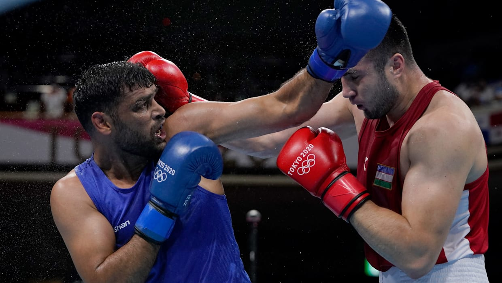

Injured Satish Kumar goes down to world champion in Tokyo Olympics boxing quarters
Satish Kumar fought despite stitches on his forehead and chin, an injury he received in the last match. All five Indian men boxers have made their exit from Tokyo 2020.
India’s first super-heavyweight Olympic boxer Satish Kumar missed out on a medal after losing to Uzbekistan’s Bakhokdir Jalolov in the quarter-final of the men’s +91kg at Tokyo 2020 on Sunday.
The 32-year-old Satish Kumar put up a spirited performance in the fight but lost to the technically superior Uzbekistan boxer by unanimous decision at the Ryogoku Kokugikan arena.
Carrying an injury from his pre-quarters match against Jamaica’s Ricardo Brown, Satish Kumar took the ring despite receiving seven stitches on his forehead and chin. The Indian boxer was given medical clearance to fight earlier in the morning.
Satish Kumar was the second Indian boxer at the Tokyo Olympics to take the ring with an injury. Earlier, welterweight boxer Vikas Krishan fought with a shoulder injury in his opening bout and went down 5:0 to Quincy Okazawa.
In Sunday’s bout, both Satish Kumar and Bakhokdir Jalolov made a conservative start and assessed their range in the first minute before Satish upped his attack. However, the Indian’s attempts didn’t find much success as Jalolov upped in defense, evading at will. Moreover, the top-seeded Uzbek boxer collected plenty of points through his right jabs to clinch the first round convincingly.
Jalolov, a three-time Asian champion, was again on the top in the second round, countering every time Satish made a move. The Uzbek timed his punches perfectly to penetrate Satish’s defense and win points. The Indian’s desperation was also exposed by a thundering left hook from Jalolov that shook Satish.
The bout seemed to have slipped out of the world No. 9 Satish’s hand even before the final round began. Jalolov kept troubling Satish with his right jabs again and defended the Indian’s wild swings through his superior footwork.
A commanding performance from world No. 1 Jalolov was awarded full points from the five judges in all three rounds. The Uzbek bettered his fifth place at Rio 2016 and is assured of a medal.
This was Satish’s third straight loss to Jalolov. All five Indian men boxers have been knocked out of the tournament, the other four in their respective opening rounds.
Only Lovlina Borgohain is still in the fray of the nine-member Indian boxing team at the Tokyo Olympics. The welterweight boxer has already confirmed a medal by advancing to the semi-final.
Video Wall
RECOMMENDED NEWS